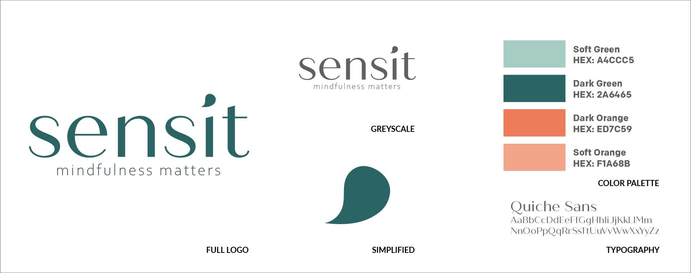
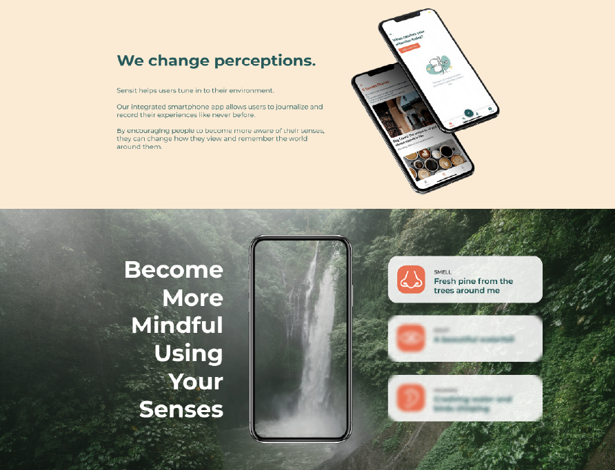

Sensit
Sensit is "not another meditation app." With a goal to help users become more mindful in their everyday lives, Sensit created an app fulling this goal. Their integrated smartphone app allows users to journalize and record their experiences like never before.
I was tasked with building a marketing strategy focused around social media and the app launch. I was then tasked with overseeing a complete rebrand including logo, website and brand guidelines.
The logo is meant to be calming and fluid, reflecting Sensit's mission of embracing mindfulness and being in-touch with the five senses. The colors are meant to be tranquil while offering contrast for different variations.
The primary platforms used were Instagram and LinkedIn. Sensit, being a startup, was actively seeking out new members for their app while also attracting investors. Instagram was spent attracting new members while LinkedIn was business-focused, sharing updates on company developments.
The website was meant to be a convert visitors to app beta testers. It was a single-page design describing the app and its functionality, the team behind the app and how to sign up to be a beta tester.
One of Sensit's goals was to create a community of users around the app launch. To achieve this, efforts were spent on mental health and traveling subreddits. Considering one of the primary target audiences for Sensit are millennials interested in both traveling and wellness, using Reddit as a key outlet for outreach proved to be a success.
The campaign resulted in 85 beta testers, obtained through organic outreach, 2,144 unique website visits & 3,518 total website visits, and 6,942 organic social media impressions.